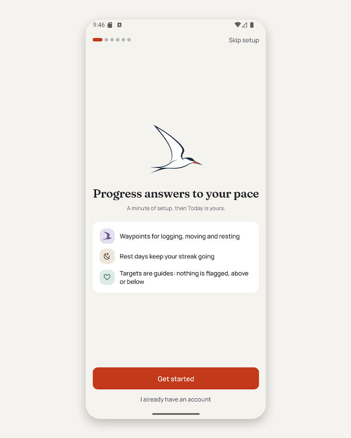
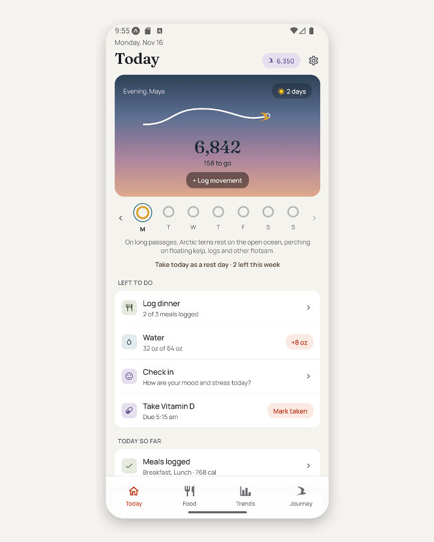
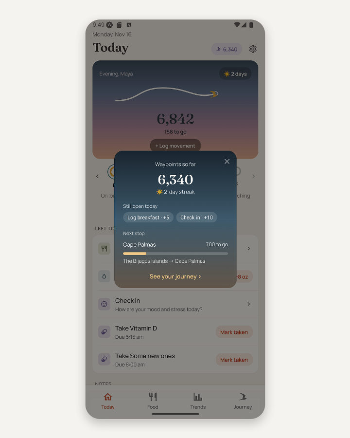
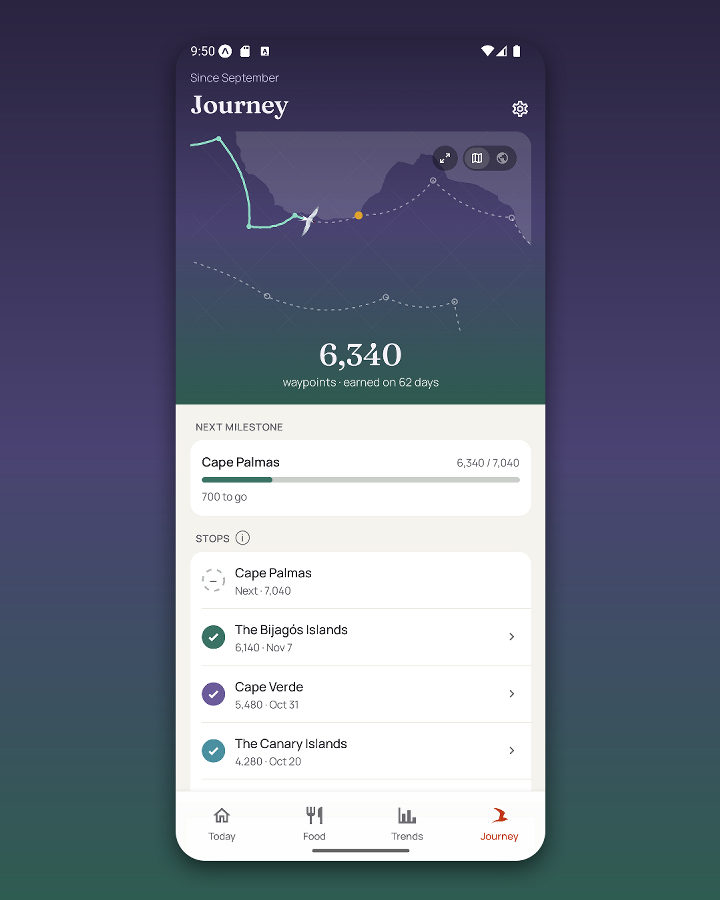
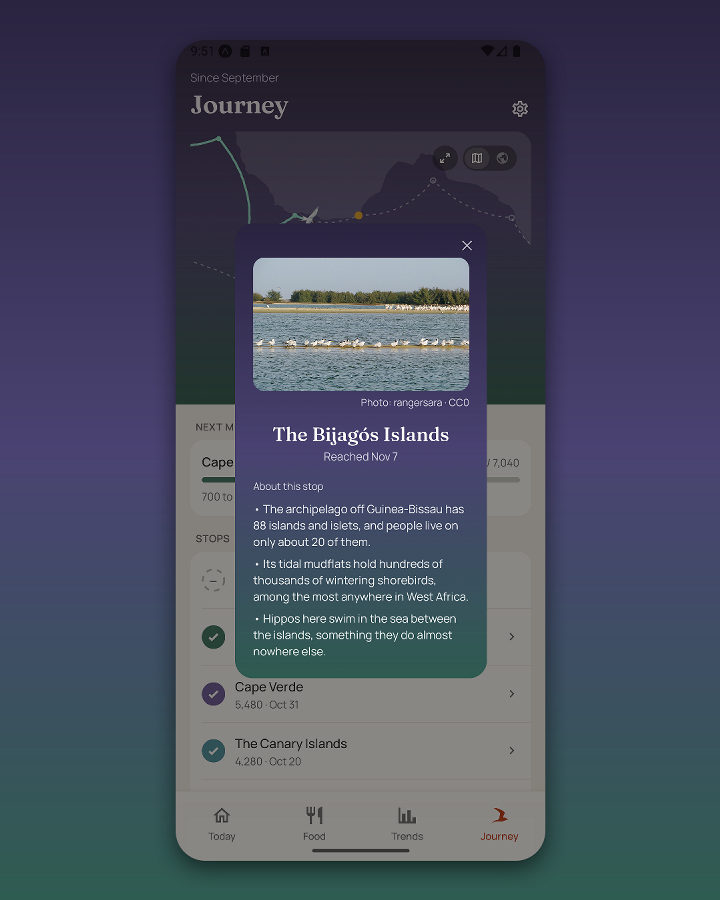

- No adsNot now, not later.
- No account neededYour info can stay on your phone.
- Yours to shapeOpt out of anything you don't want to see, like calories or weight.
A peek inside
Tern is built with movement in mind and a focus on customizability, for folks navigating complex relationships with food, bodies, movement and tracking. Showing up earns waypoints, and your waypoints fly the Arctic tern's real migration.
-

Easy onboardingA minute of setup, or you can skip it. -

TodayJust what's left to do, and a rest day when you need one. -

WaypointsEarned for logging, moving and resting. -

JourneyYour waypoints fly your tern along a documented route, from pole to pole. -

Real stopsEach one comes with a photo and a few facts.
Swipe for more →
Join the test
As a personal developer, I'm looking for testers, particularly android ones, to use it for a week or two and tell me what's confusing, broken, missing or awesome.
Android
Use the same Google account for all three steps: the one your phone uses for the Play Store.
-
Join the testers group
Google uses it to know who can install the test version.
Join the group -
Become a tester
Open this and tap Become a tester.
Opt in on Google Play -
Install Tern
It can take a few minutes after opting in to show up.
Get it on Google Play
iPhone
Through TestFlight, Apple's app for trying apps early.
-
Install TestFlight
It's free, from the App Store.
Get TestFlight -
Install Tern
Open this on your iPhone and tap Accept, then Install.
Join the Tern beta
Arctic terns fly about 70,000 km a year. This trip is just two weeks: Google needs a group of testers to keep Tern installed that long before it can go out to everyone.
Sending feedback
Anything helps, big or small, and screenshots are great. Email a.threadless@proton.me or message me wherever you found this link. 💛